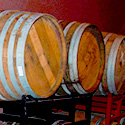
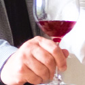
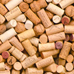

Vineyard
Barrels
A barrel, cask, or tun is a hollow cylindrical container, traditionally made of wooden staves bound by wooden or metal hoops.
Color
The color of wine is one of the most easily recognizable characteristics of wines. Color is also an element in wine tasting since heavy wines generally have a deeper color.
Corks
Cork is composed of suberin, a hydrophobic substance and, because of its impermeable, buoyant, elastic, and fire retardant properties, it is used in a variety of products, the most common of which is wine stoppers.